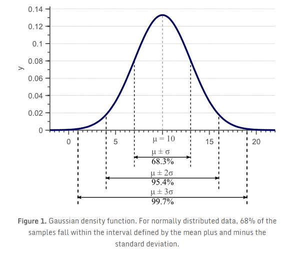
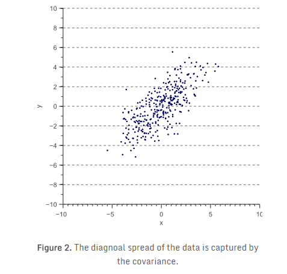
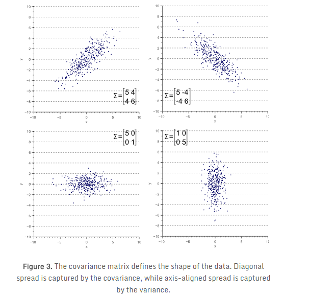
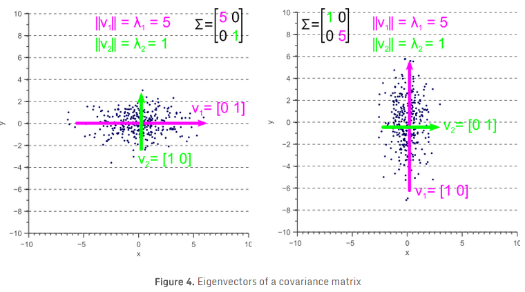
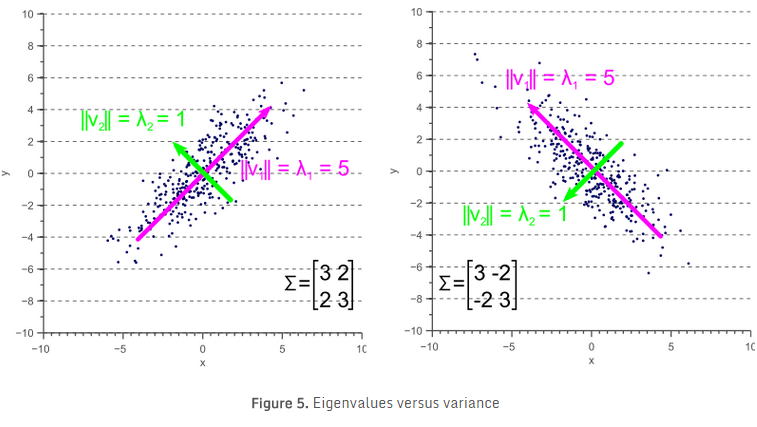
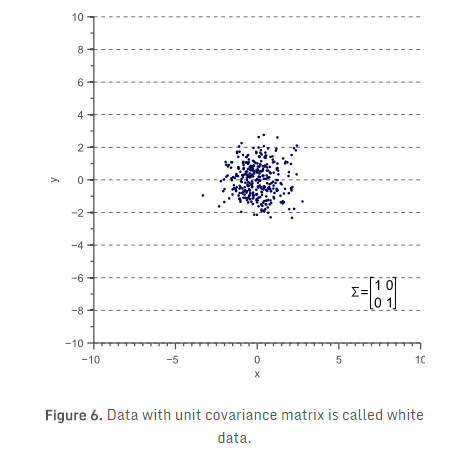
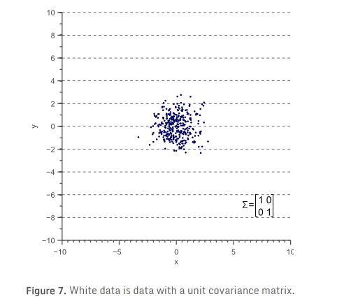
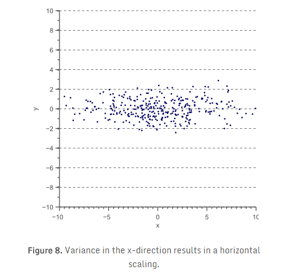
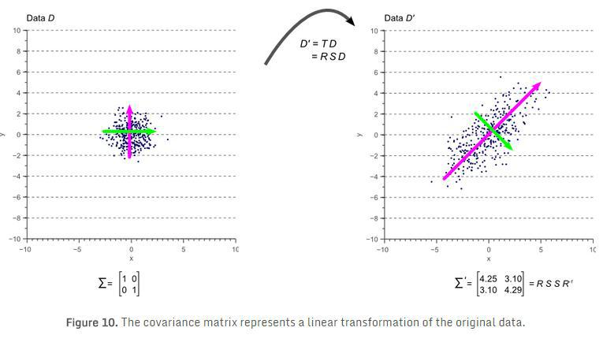

协方差矩阵的几何解释¶
本文结合直观的图形解释，说明了协方差矩阵实质上是一个线性变换，主要思想有如下几点：
- 协方差矩阵是怎么来的：方差表征了沿特征轴方向的离散度，但无法表征特征间的相关性，因此引入协方差来进行描述这种相关性；
- 线性变换由旋转和缩放组成，通过特征值分解的方法可以导出，协方差矩阵等价于对原特征空间的白数据做了一个线性变换；
- 协方差矩阵的最大特征值对应的特征向量，总是指向方差最大的方向；次最大特征值对应的特征向量，正交于最大特征值对应的特征向量，并指向次最大方差指向的方向。
1、引言¶
本文通过研究线性变换，及变换后得到数据的协方差(Covariance)之间的关系，给出了协方差矩阵的一个直观图形解释。大部分教材是根据协方差矩阵的概念解释数据的形状。我们反其道而行之，通过数据的形状来阐述协方差矩阵的概念。
在《为什么样本方差除以N-1？》文章中，我们讨论了方差(Variance)的概念，给出了著名的样本方差估算公式的推导和证明。如图1所示，标准差（方差的平方根）表明了数据在特征空间中的离散度。 
样本方差的无偏估计：
不过，方差只能说明数据在平行于特征空间坐标轴方向上的离散度。考虑如图2所示的二维特征空间：

对图2中的数据，我们可以计算 \(x\) 轴方向上的方差 \(\sigma(x,x)\)，和 \(y\) 轴方向上的方差\(\sigma(y,y)\)。但是，数据在水平和垂直方向上的离散度，无法解释数据呈对角线分布的特点。图2中可以很清楚地看到，总体来说，数据点 \(x\) 值增加，其 \(y\) 值也增加，即正相关性。这种相关性，可通过推广方差的概念，得到所谓的“协方差”： \( \sigma(x,y)=E[(x-E(x))(y-E(y))] \) 对二维数据，可以得到 \(\sigma(x,x)\) 、 \(\sigma(y,y)\) 、 \(\sigma(x,y)\) 和 \(\sigma(y,x)\) 。这四个值构成的矩阵，称为协方差矩阵：
由于 \(x\) 与 \(y\) 的相关性，等价于 \(y\) 与 \(x\) 的相关性。也就是说，\(\sigma(x,y) = \sigma(y,x)\)。因此，协方差矩阵，始终是一个由位于对角线上的方差和非对角线上的协方差构成的对称矩阵。二维的正态分布特性，可以用均值及 \(2 \times 2\) 协方差矩阵完整描述。同样， \(3 \times 3\) 协方差矩阵，可用于描述三维数据， \(N \times N\) 协方差矩阵可以描述 \(N\) 维数据。
图3展示了数据的整体形状和协方差矩阵的关系： 
2、协方差矩阵的特征值分解¶
下一节，讨论协方差矩阵是如何作为一个线性算子，将白数据(white data)转换为观测数据。不过，在进入技术细节前，直观理解特征向量和特征值如何唯一地定义协方差矩阵和数据形状，非常重要。
如图3所示，协方差矩阵定义了数据的离散程度（方差）和走向（orientation）（协方差）。因此，可以简单的使用指向最大离散度方向的向量和其值（该值等于这个方向上的方差），表示协方差矩阵。
定义向量 \(\vec{v}\) ，将数据\(D\)投影到该向量后得到 \(\vec{v}^T D\) ，投影后数据的方差为 \(\vec{v}^T \Sigma \vec{v}\) 。为了获得指向最大方差方向的向量 \(\vec{v}\)，需要找到使投影后数据的协方差矩阵 \(\vec{v}^T \Sigma \vec{v}\) 最大的成分。当 \(\vec{v}\) 为归一化单位向量时，求解关于向量 \(\vec{v}\) 的函数 \(\vec{v}^T \Sigma \vec{v}\) 的最大值，可以用使用最大化瑞利熵方法。当\(\vec{v}\)等于协方差矩阵\(\Sigma\)的最大特征向量时，瑞利熵最大。
说明1 ，数学习惯上使用列向量表示一个基向量，例如平面坐标系的两个基向量\(\vec{x}\)和\(\vec{y}\)分别表示为\([1,0]^T\)和\([0,1]^T\)。机器学习中则习惯使用行向量表示一个样本（行数即为样本数），即基向量是一个行向量，如：\([1,0]\)。
说明2 ，向量\(\vec{d_1}\)在向量\(\vec {v_1}\)上的投影，就是两个向量的内积\(\vec{v_1}^T \cdot \vec{d_1}\)，向量均使用列向量形式表示。如果是向量\(\vec{d_1}\)分别在向量\(\vec {v_1}\)和\(\vec {v_2}\)上投影，那么只需要简单的将两个向量组成一个矩阵，\(V = [v_1, v_2]\)，然后继续点乘： \(V^T d_1\)。再推广下，如果是\(n\)个向量构成的样本\(D\)：\(D = [d_1,d_2,\cdots, d_n]\)，则数据集\(D\)在向量空间\(V\)的投影可以表示为： \( D^{'} = V^T D \) 因此，协方差矩阵\(\Sigma\)向量空间\(V\)中的投影矩阵为\(\Sigma^{'}=V^T \Sigma\)，对角线元素为方差。则对应于\(\vec{v_1}\)的方差为\(\Sigma^{'} v_1=V^T \Sigma v_1\)
换句话说，协方差矩阵的最大特征值对应的特征向量，总是指向方差最大的方向。第二大特征值对应的特征向量，正交于最大特征值对应的特征向量，并指向第二大方差指向的方向。
现在，让我们来看一些例子。在《特征值和特征向量》(原文，译文)中，线性变换矩阵 \(T\) 仅由特征向量和特征值确定。将其应用于协方差矩阵（注：协方差矩阵相当于两个特征向量之间的线性变换，可以通过特征方程求出特征向量和特征值）：
如果协方差矩阵是对角矩阵，即协方差部分为零，则方差必然等于特征值 \(\lambda\)。如图4所示，特征向量用绿色和红色表示，特征值明显等于协方差矩阵的方差分量。 
如果协方差矩阵是非对角矩阵，即协方差部分不为零，则情况稍微复杂一些。特征值仍是最大离散方向的方差，协方差矩阵的对角线（方差）分量，仍然是 \(x\) 轴和 \(y\) 轴方向的方差大小。但因为数据是非轴对齐（最大方差对应的向量与x/ \(y\) 轴有一个夹角），所以协方差矩阵对角线上的值不再与图5所示的相同。 
比较图5与图4，可以清楚地看到，特征值表示沿特征向量方向的方差，而协方差矩阵的方差分量表示沿轴的方差。如果协方差为0，则两个值相等。
3、使用协方差矩阵作线性变换¶
现在，暂时放一放协方差矩阵。图3中的例子，可以简单地认为是图6的一个线性变换： 
令图6中数据为 \(D\) ，则图3中的各示例可以通过对 \(D\) 做线性变换得到： \( D^{'}=TD \) 其中，\(T\) 是含有旋转矩阵 \(R\) 和缩放矩阵 \(S\) 的变换矩阵：
矩阵 \(R\) 和 \(S\) 的定义如式 (4) 和式 (5)：
式 (4) 中， \(\theta\) 为旋转角度。式 (5) 中， \(s_x\) 、 \(s_y\) 分别是 \(x\) 方向和 \(y\) 方向的缩放比例因子。
接下来讨论，协方差矩阵 \(\Sigma\) 和线性变换矩阵 \(T\) 之间的关系。
先从无缩放（缩放比例为1）、无旋转数据开始。此类样本服从标准正态分布，对应于白（非相关）噪声，统计学习惯称之为“白数据”： 
“白”数据的协方差矩阵，等于单位矩阵，因此方差和标准差为1，协方差等于0：
现在，对 \(x\) 方向乘4：
则变换后的数据 \(D^{'}\) 如图8所示： 
\(D^{'}\) 的协方差矩阵 \(\Sigma^{'}\) 为：
故 \(D^{'}\) 的协方差矩阵 \(\Sigma^{'}\) ，与作用在原始数据上的线性变换矩阵\(T\)的关系为 \(D^{'}=TD\)，这里:
式 (6) 在 \(x\) 和 \(y\) 方向上进行缩放变换时成立，但该式是否可用于旋转变换？考虑一般情况下，线性变换矩阵 \(T\) 和协方差矩阵 \(\Sigma^{'}\) 之间的关系，我们将协方差矩阵分解为旋转和缩放矩阵的乘积。
如前所述，协方差矩阵可以用特征向量和特征值表示，式 \((\ref {CovMatrix})\) 包括了矩阵 \(\Sigma\) 的每一个“特征向量-特征值”对。在二维情况下，有2个特征向量和2个特征值。矩阵可以有效的描述式 \((\ref {CovMatrix})\) 定义的两个等式关系：
式 \((\ref {eigenvectors})\) 中， \(V\) 是由 \(\Sigma\) 的各特征向量构成的矩阵，\(L\) 为相应特征向量对应的非0特征值组成的对角矩阵。
解得协方差矩阵：
式 \((\ref {Eigendecomposition})\) 称为协方差矩阵的特征值分解，可通过 奇异值分解(SVD) 算法求解。由于特征向量表示了最大方差的方向，特征值表示该方向上方差的值。也就是说，\(V\) 就是旋转矩阵，而 \(\sqrt{L}\) 就是缩放矩阵。协方差矩阵可进一步分解为：
式中，\(R=V\) 为旋转矩阵，\(S=\sqrt{L}\)为缩放矩阵。式\((\ref {matrixT})\) 定义了线性变换 \(T\) ( \(T=RS\) ) 。因为 \(S\) 为对角缩放矩阵，故 \(S=S^T\)。另外， \(R\) 为正交矩阵，所以 \(R^{-1}=R^T\) 。从而，协方差矩阵可以写为： \( \Sigma=RSSR^{-1}=(RS)(SR^{-1})=(RS)(S^{T}R^{T})=(RS)(RS)^{T}=TT^T \)
也就是说，对图7中的原始“白”数据 \(D\) 使用线性变换 \(T\) ( \(T=RS\) )，即可得到旋转和缩放后的数据 \(D^{'}\)及其协方差矩阵 \(\Sigma^{'}\) （ \(\Sigma^{'}=TT^{T}=RSSR^{-1}\) ），如图10所示： 
图10中彩色箭头表示特征向量。与最大特征值对应的特征向量，总是指向数据最大方差的方向，并规定了其走向（orientation）。由旋转矩阵的正交性，次最大特征值对应的特征向量，总是与最大特征值对应的特征向量正交。
4、总结¶
本文说明了，被观测数据的协方差矩阵，直接与针对白（非相关）数据的线性变换有关。该线性变换完全由特征向量和特征值定义。特征向量表示了矩阵的旋转，特征值对应于每个维度上缩放因子的平方。
5、补充说明¶
线性变换、特征值和特征向量¶
线性变换(线性映射)，表征了向量在两个向量空间之间变换的一种映射关系，它保持向量加法和标量乘法的运算，向量加法对应于旋转矩阵，标量乘法对应于缩放矩阵。
特征值和特征向量是一体的概念：
对于一个给定的线性变换，其特征向量 \(\xi\) 经过该线性变换之后，得到的新向量仍然与原来的 \(\xi\) 保持在同一条直线上，但其长度可能会改变。一个特征向量的长度在该线性变换下的缩放比例，称为其特征值（本征值）。
数学描述如下： \( A \xi=\lambda \xi \) 在线性变换 \(A\) 的作用下，向量 \(\xi\) 仅仅在尺度上变为原来的 \(\lambda\) 倍。\(\lambda\)称为特征值，\(\xi\)称为线性变换\(A\)的属于特征值\(\lambda\)的特征向量。
矩阵 \(A\) 的非零特征值最大数目是该矩阵的秩 \(rank(A)\) 。对于每个特征值 \(\lambda_i\) 均满足特征方程(Characteristic equation) \((A−\lambda_{i}I)\xi=0\) 。
简言之，特征向量和特征值表达了线性变换的针对的对象和大小，两者一一对应，成对出现。在物理上，特征值表明线性变换对基向量的缩放程度，特征向量表明线性变换针对的基向量方向，同时特征向量之间是线性无关的。
参考¶
凡本网注明"来源：XXX "的文/图/视频等稿件，本网转载出于传递更多信息之目的，并不意味着赞同其观点或证实其内容的真实性。如涉及作品内容、版权和其它问题，请与本网联系，我们将在第一时间删除内容！
作者: Ferret Njtech
来源： https://njuferret.github.io/2019/07/28/2019-07-28_geometric-interpretation-covariance-matrix/